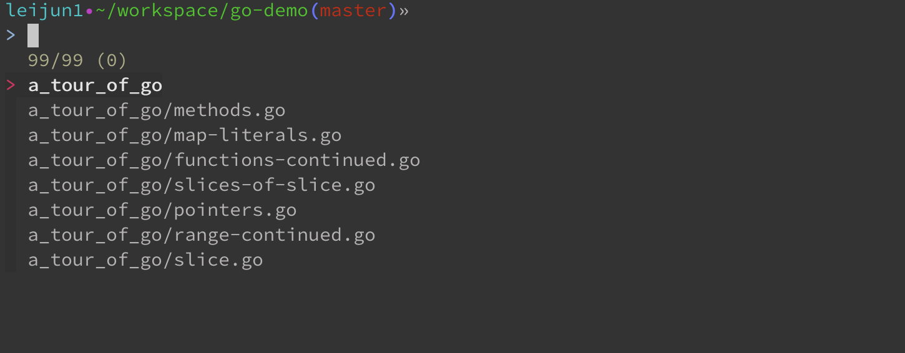
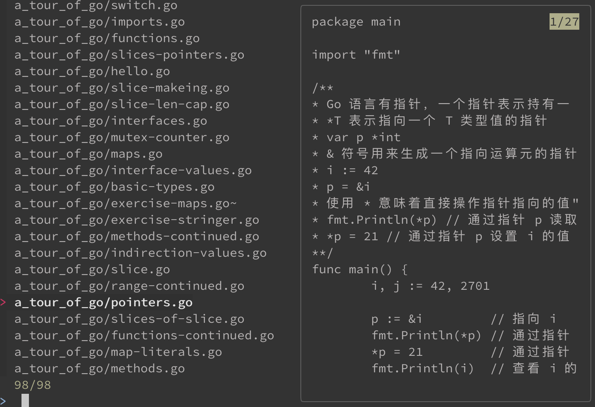

命令行搜索神器fzf
在日常工作中，命令行搜索是一个必不可少的功能，虽然 find 命令也挺强大，但是在模糊匹配做的就不是很好。
而 fzf 刚好解决了这个问题，fzf 是对目前 Linux 系统搜索的一个补充，而且这个搜索工具是可以交互式搜索的，就是可以实时根据输入的参数不同，展示不同的搜索结果。
本文基于 macOS Big Sur 11.0.1
1. 安装
fzf 目前支持 macOS，Linux 和 Windows，可以通过直接下载安装包安装，也可以通过包管理器进行安装。
重点说一下通过包管理器来安装。
macOS
在 macOS 上，可以通过 Homebrew 进行安装:
1
2brew install fzf # 安装 fzf
brew update # 更新 fzf
或者通过 MacPorts 进行安装:
1
2port install fzf # 安装 fzf
port upgrade fzf # 更新 fzf
Linux
在 Linux 系统上，使用相应的包管理器进行安装就可以，比如在 Ubuntu 上：
1
sudo apt install fzf # 安装 fzf
Windows
在 Windows 上，可以使用 Chocolatey 或者 Scoop 包管理器进行安装：
1
2choco install fzf
scoop install fzf
Git
fzf 还可以直接下载源码进行安装:
1
2git clone --depth 1 https://github.com/junegunn/fzf.git ~/.fzf
~/.fzf/install
2. 使用
在安装完成之后，可以直接在命令行进行使用，使用的方式很简单，打开一个命令行，在任意一个目录下输入 fzf 或者使用快捷键 CTRL-T，就可以进入到 fzf 的交互式搜索。

该目录下，包括子目录的所有文件都可以被搜索，而且可以随意的输入关键字，关键字可以被拆分，分别匹配。
fzf 不但可以独立使用，还是以通过管道与其他的命令进行配合使用。
比如结合 find：
1
find *.go ./ | fzf
比如结合 cat：
1
cat demo.go | fzf
基本上，上面的功能就足够使用了，但 fzf 还有更能更强大的地方，比如在命令行搜索文件时，只能看见文件名称。
fzf 可以让你在命令行就对这些文件进行预览，很简单，使用下面的命令的就可以了：
1
fzf --preview 'cat {}'
这个命令表示使用 cat 来作为预览时打开文件的工具，效果如下：

另外，可以使用 CTRL-J 和 CTRL-K 上下翻动文件，右侧就可以出现文件内容的预览。
使用 CTRL-C 可以退出交互界面。
上面的内容基本就够用了，但 fzf 还有一些高阶的用法，比如对查询界面进行定制，使用更复杂的查询语句，对于这些，可以直接查看文档。
文 / Rayjun